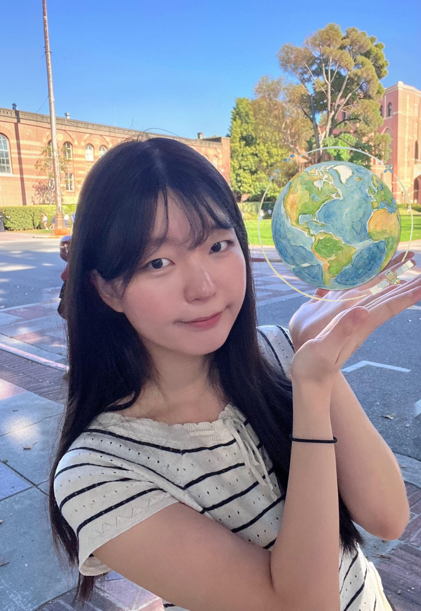

I am a Ph.D. student in Applied Artificial Intelligence at Seoul National University of Science and Technology. My research lies at the intersection of artificial intelligence, remote sensing, and environmental science.
I am particularly interested in extracting fine-scale information from satellite and meteorological observations that are limited by coarse spatial resolution, sparse observations, and cross-domain discrepancies.
My current research includes satellite image super-resolution, environmental variable downscaling, Earth observation foundation models, and AI-based analysis of climate and carbon-cycle variables.
Seoul National University of Science and Technology
Seoul National University of Science and Technology · GPA 4.43 / 4.50
Center for Climate and Carbon Cycle Research, Korea Institute of Science and Technology (KIST)
Seoul National University of Science and Technology · GPA 4.22 / 4.50
Seoul National University of Science and Technology
I am interested in research collaboration in AI, remote sensing, Earth observation, image restoration, and environmental applications.
hbpark09@seoultech.ac.kr